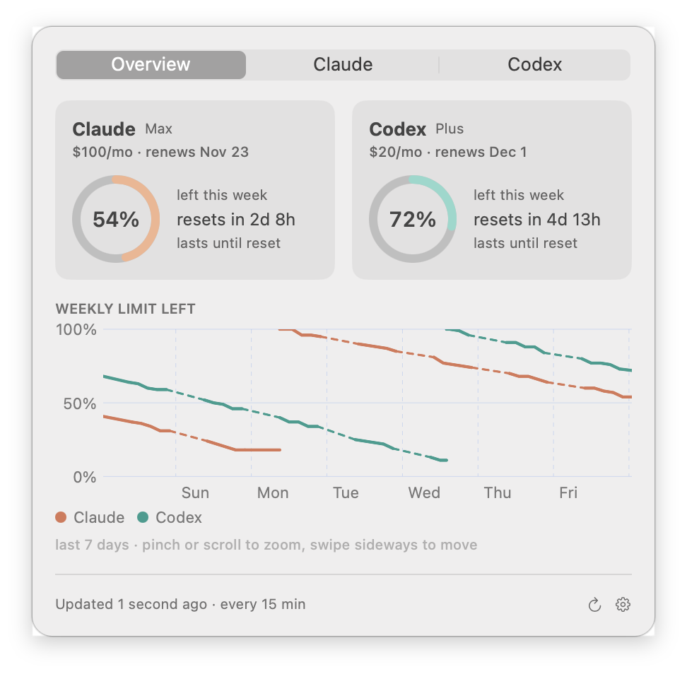
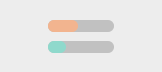
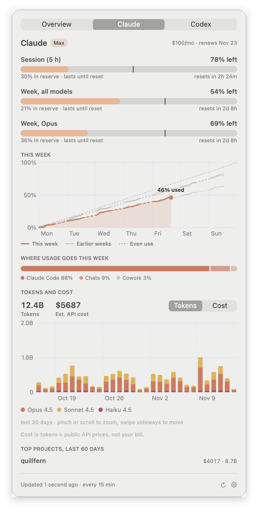
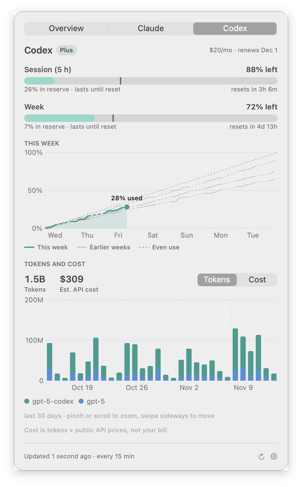
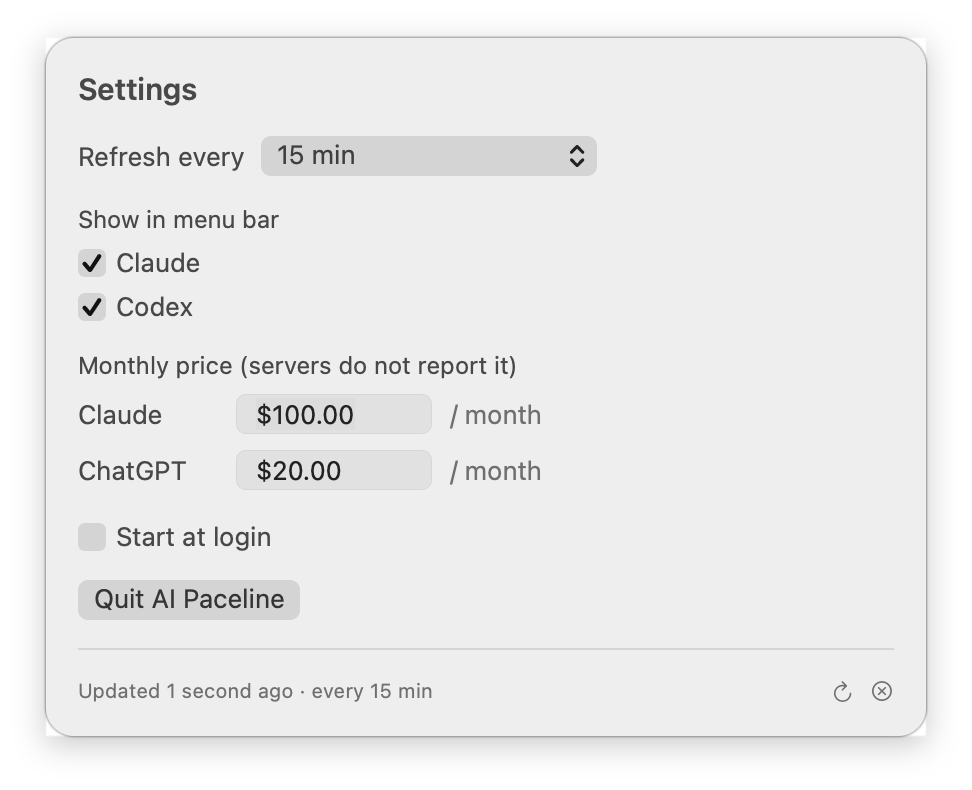

Your Claude and Codex limits in the macOS menu bar: how much is left this week, when it resets, and whether you are on pace to last until then.
Free and open source (MIT). macOS 15 or later.

Claude on top, Codex below. Each bar fills with the weekly limit you have used, gets deeper in color as you near the limit, and turns grey when the numbers are stale. Hover for the exact numbers.

Every limit has a marker for even use until the reset. You see "20% in reserve" or "runs out Sat 18:00", and this week's line next to earlier weeks.

Daily tokens and estimated API cost by model, read from your local Claude Code and Codex logs. Pinch or scroll to zoom the time window, swipe to move back in time.

Refresh every 5 to 60 minutes, choose which bars to show, enter what you pay per month, and start at login.

AIPaceline-macos-arm64.zip,
unzip it, and move AI Paceline.app to ~/Applications.xattr -dr com.apple.quarantine ~/Applications/"AI Paceline.app"npx ccusage).Needs the Xcode Command Line Tools and Task.
git clone https://github.com/danylkaaa/ai-paceline.git
cd ai-paceline
task install # build, copy to ~/Applications, start
task test # unit tests